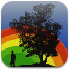

GPS Alarm 1.0
Be in right place at right moment
GPS Alarm lets you create and manage alarms based on you location.
Let your iPhone wake you up one train stop before arrival so you can sleep five minutes more, don't forget to
buy those carrots if you walk next to the supermarket or remind to schedule a meeting with you dentist if you are around.

Developed by: Carlos Buenosvinos (@buenosvinos)
He is a PHP fan. He is one of the founders of PHP Barcelona User Group, Zend Framework Certified, Zend PHP Certified and Scrum Master Certified.
Carlos is running "strange" projects all the time, so if you are interested, you can follow him in @buenosvinos, linkedin, GitHub or just sent him an email: carlos@quepimquepam.comc.
You can take a look at his Development Factory called QuePimQuePam.com.